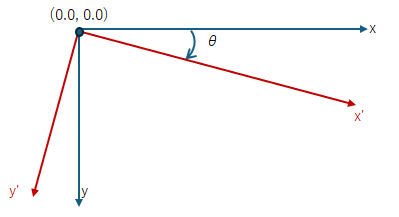

(update:2025/3/22)

座標系を平行移動します。
rotate()関数では、回転角θを弧度法(radian)で指定します。三時の方向を開始角度0radianとして時計回りに角度が進みます。
回転角θを指定して、rotate()関数を実行します。rotate()関数が実行された後に形成されるパスは、座標系が回転して描かれます。
| void Cairo::Context::rotate( | double | radians ) | // 座標の回転角(radian) |
|---|
※上記以外に度数法で回転角を指定するrotate_degrees()関数があります。
#include <gtkmm.h>
class Drawing : public Gtk::DrawingArea {
public:
Drawing();
virtual ~Drawing() = default;
protected:
void on_draw(const Cairo::RefPtr<Cairo::Context>& cr, int width, int height);
};
Drawing::Drawing()
{
set_draw_func( sigc::mem_fun( *this, &Drawing::on_draw));
}
void Drawing::on_draw(const Cairo::RefPtr<Cairo::Context>& cr, int width, int height) {
double xc = width * 0.5;
double yc = height * 0.5;
double radius = std::min( width, height ) * 0.45;
double x,y;
double angle;
cr->translate( xc, yc );
// background
cr->set_source_rgba( 0.0, 0.0, 0.0, 1.0 );
cr->paint();
// rotate & arc
cr->set_source_rgba( 1.0, 1.0, 0.0, 1.0 );
for( int i = 0; i < 12; i++ ) {
cr->rotate( 30 * M_PI/180.0 ); // ループの度に３０度ずつ時計回りに回転する。
cr->arc( radius, 0, 5.0, 0.0, 2*M_PI );
cr->fill();
}
}
class MyWindow : public Gtk::Window
{
public:
MyWindow();
protected:
Drawing my_draw;
};
MyWindow::MyWindow()
{
set_title( "rotate" );
set_default_size( 320, 240 );
set_child( my_draw );
}
int main(int argc, char* argv[]) {
auto app = Gtk::Application::create( "gtkmm4.example" );
return app->make_window_and_run<MyWindow>( argc, argv );
}